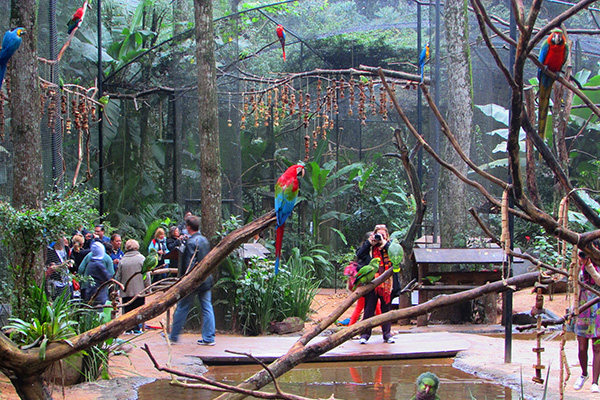

Foz do Iguaçu é um destino que vai te levar a conhecer uma das sete
maravilhas do mundo: as famosas Cataratas do Iguaçu. Apesar da fama, a
beleza exuberante da cidade não se limita às enormes quedas d’água. Há
muito mais para conhecer e se encantar.
Localizada no extremo
oeste do Paraná e popularmente conhecida como a Terra das Cataratas, a
cidade tem dois parceiros que completam o eixo turístico: a Argentina e
o Paraguai. A tríplice fronteira possibilita a oportunidade de pisar em
três países em uma única viagem (ou ao mesmo tempo, se você visitar o
Marco das Três Fronteiras).
Saiba que esse destino é um lugar para
ir e nunca mais se esquecer. Sem dúvidas, quem visita Foz do Iguaçu sai
de lá tentando mensurar a riqueza das belezas naturais que moldam o
Brasil.
Os melhores lugares para ficar em Foz do Iguaçu são no centro e nas regiões próximas da Avenida das Cataratas (avenida que liga o centro ao Parque Nacional do Iguaçu). No geral, a cidade tem uma extensa rede hoteleira, com ótimas opções de hotéis, pousadas e resorts para todos os bolsos.
Foz do Iguaçu, a terra das Cataratas! A cidade que hospeda as belíssimas
quedas d’água consagradas entre as 7 Maravilhas da Natureza já foi
considerada um dos melhores lugares turísticos do mundo e é o segundo
destino mais turístico do Brasil e não é pra menos! Afinal, os passeios
em Foz do Iguaçu são maravilhosos e marcantes.
Mas há quem queira
ir além das Cataratas do Iguaçu, e normalmente a segunda opção entre os
passeios em Foz do Iguaçu é o gracioso Parque das Aves, ou então a
poderosa Usina Hidrelétrica de Itaipu, que também levou o título de uma
das 7 Maravilhas da Construção do Mundo Moderno são tantas maravilhas
num só lugar que a gente até se perde, né?!
São 275 quedas d’água imponentes que repercutem pela mata antes
mesmo que você as veja. O clima úmido e fresco ajuda a compor o
cenário paradisíaco envolto pela Mata Atlântica que as Cataratas do
Iguaçu apresentam aos seus visitantes. Uma verdadeira experiência
memorável que nenhuma imagem ou vídeo pode realmente captar sua
essência.
E é por isso mesmo que este destino não pode faltar em seu roteiro
por Foz do Iguaçu, no Paraná. Afinal, não foi à toa que ele entrou
como uma das Sete Novas Maravilhas Naturais do Mundo em 2012. Este é
o maior conjunto de quedas d’água do mundo! Em comparação a ele,
estão apenas as Cataratas do Niágara, na fronteira entre os Estados
Unidos e o Canadá, e as Cataratas Victória, na fronteira entre a
Zâmbia e o Zimbábue.
No Parque das Aves é a única instituição do mundo focada na conservação das aves da Mata Atlântica. Visitando o Parque, você tem uma experiência encantadora com essas lindas e exuberantes aves e com as florestas em que habitam, e ajuda a reverter a crise de conservação que a Mata e suas espécies estão vivendo.

Uma construção monumental que hoje é um dos principais pontos
turísticos de Foz do Iguaçu, com um atendimento turístico organizado
e um serviço qualificado, que conta com várias opções de atrações
tanto nas áreas da engenharia, como na tecnologia, na natureza e no
resgate histórico da região. No ano de 2019 a Usina de Itaipu
recebeu mais de 1 milhão de visitantes.
A “Visita Panorâmica”,
é o passeio tradicional da Usina, e começa no Centro de Visitantes
com um filme apresentado numa sala de cinema, que conta a história
da construção da barragem, e um pouco do atual trabalho de Itaipu.
Após a projeção, os visitantes são levados de ônibus para dois
mirantes de observação, que permitem diferentes pontos de vista da
construção, e o passeio termina passando ao lado, e sobre a barragem
quando também há a vista do Lago de Itaipu.l.
O Templo Budista Chen Tien fica localizado em uma privilegiada
região alta da cidade, onde pode se ter uma visão de parte do centro
da cidade de Foz do Iguaçu e de Ciudad del Este (Paraguai).
A
beleza do local permite um contato mais próximo com a filosofia
Budista, e um momento de descanso durante a viagem.
O local
foi construído em 1996, e hoje, nos jardins do templo existem mais
de 120 estátuas, cada uma com o seu significado, sendo os destaques,
uma estátua de Buda de 7 metros de altura, e um templo que cria um
ambiente bastante especial para o local.
Não existe época ruim quando ir ao Rio de Janeiro. O Rio é um destino
para o ano inteiro. Aqui não há nenhuma estação excessivamente
chuvosa.
o frio do meio do ano é perfeitamente suportável, e é
relativamente comum dar praia em julho ou agosto. Isso não quer dizer,
obviamente, que todos os dias da sua viagem serão quentes e ensolarados.
Frentes frias, previstas ou inesperadas, passam pela cidade em todas as
estações e podem, sim, ocasionar uma seqüência de dias sem praia.
‘Cariocas
não gostam de dias nublados’, diz a canção da (gaúcha) Adriana
Calcanhotto. Os visitantes tampouco. Mas felizmente há muito o que fazer
em dias de chuva.